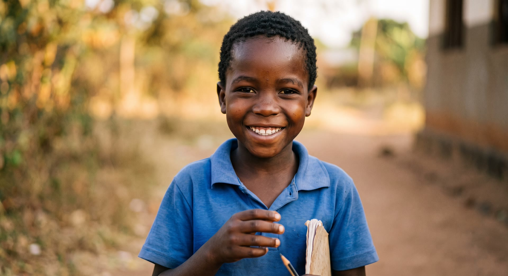

Community road safety outreach
School and community visits combining road safety education, first aid training, and the distribution of safety materials.


Reaching out. Touching hearts. Changing lives.
RTC Foundation is a Ghana-based health charity based in Kumasi, in the Ashanti Region. Our membership is made up largely of medical professionals working across Ghana and Nigeria, united around one purpose: easing the burden of the conditions that cost our communities the most — cancer, road traffic accidents, and neurological disease.
“To save and uplift lives by alleviating the burden caused by cancer, road traffic accidents and neurological diseases.”
Our vision is to eliminate stigmatization and promote health-seeking behavior towards certain neurological diseases, and to drastically reduce the incidence, morbidity, and mortality associated with cancers and road traffic accidents.
Humanitarianism · Solidarity · Excellence · Commitment · Innovation
Our work mirrors the three symbols in our mark. Each year, we give one area our deepest focus — while continuing to support the other two.
We lead road safety education and accident-prevention advocacy in schools and communities, and stand with survivors of road traffic accidents and their families.
We support cancer screening and vaccination access, raise awareness through public education, and help fund treatment for young people living with cancer.
We work to combat stigma around neurological conditions through public education, and promote earlier, better-informed health-seeking behavior.
Every year, RTC Foundation runs a set of core activities across our focus areas:
School and community visits combining road safety education, first aid training, and the distribution of safety materials.
A recurring donation drive run in partnership with regional health institutions to keep local blood supplies stocked for the patients who need them.
Free screening events covering blood pressure, blood sugar, BMI, and cancer screening, with on-the-spot referrals for anyone who needs follow-up care.
Ongoing visits and support extended to children undergoing cancer treatment and their families, for as long as they need us.
Membership is open to anyone of sound mind with a genuine interest in our mission, subject to vetting by our executive. Here's what being a member involves:
Whether you want to volunteer, join as a member, or support our work with a donation — tell us a bit about yourself and we'll be in touch.
Our work is made possible in partnership with regional health institutions and media partners across Ghana, including Komfo Anokye Teaching Hospital (KATH).